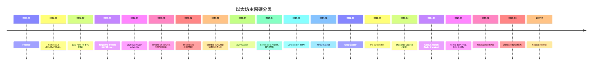
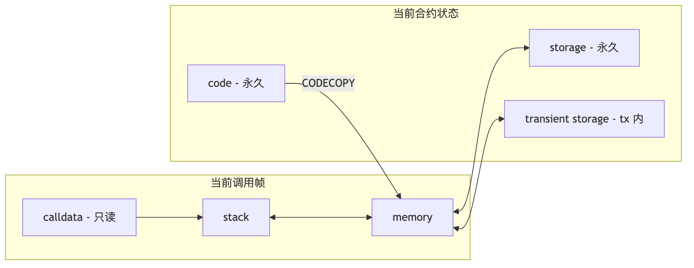
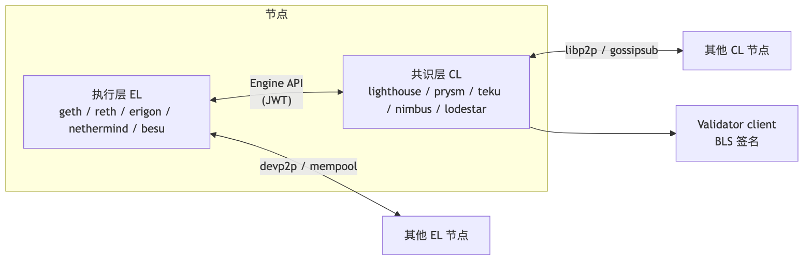
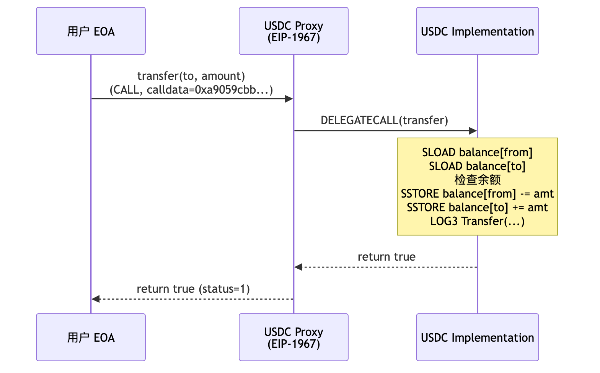
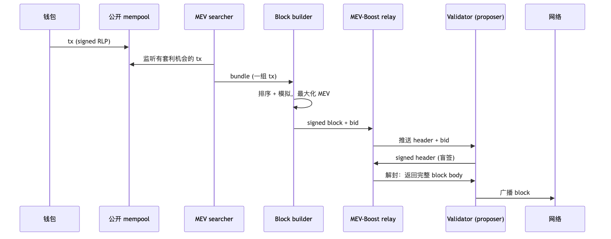
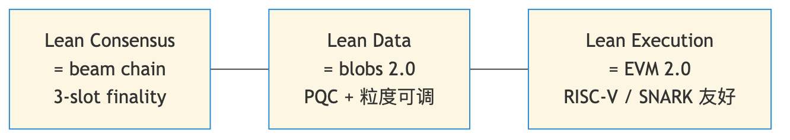
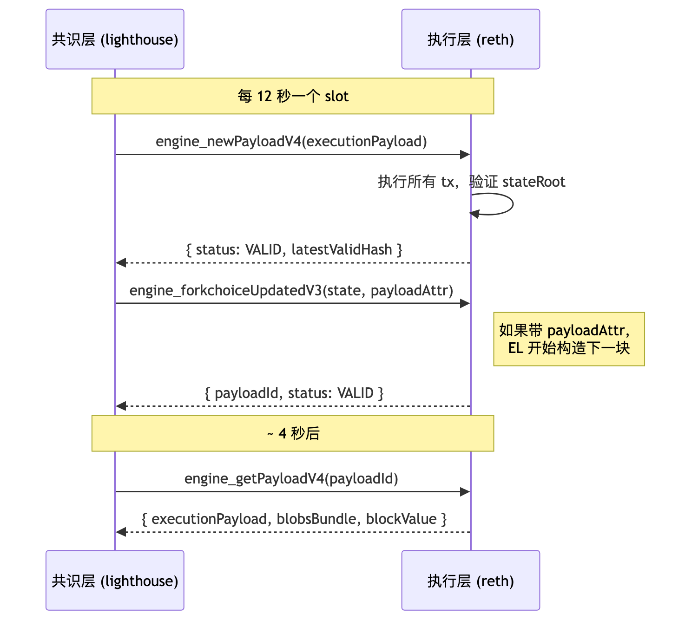

时间锚点 2026-04：Pectra（2025-05-07）、Fusaka（2025-12-03，含 BPO1 12-09 与 BPO2 2026-01-07）已上线；Glamsterdam 在 2026 H1 末/Q3 候选；Hegota（Verkle）规划在 2026-H2 ~ 2027。操作码速查以 evm.codes 为准。
前置：模块 02 — 区块链原理与共识。后置：模块 04 — Solidity 开发。
读完能做到：
evm.codes disassembler 推断函数签名。钱包按"transfer 1000 USDC"按钮。这条 RLP 字节流送进网络之前，协议必须把三个问题在 12 秒内答完：
每个问题对应一个 EVM 设计选择。把这三条线拉直，整个模块的内容是它们的展开。
| 问题 | EVM 选择 | 见 |
|---|---|---|
| 怎么签 + 扣钱 | secp256k1 + EIP-2718 typed envelope；EIP-1559 base fee 烧 + 小费 | §3, §4 |
| 怎么停机 + 怎么算 | 栈机 + 每 opcode 付 gas + 超额 revert | §5, §6 |
| 怎么记 + 怎么核对 | 账户模型 + Merkle Patricia Trie + 全节点重算 stateRoot | §3.1, §8 |
| 约束 | 它逼出的设计 |
|---|---|
| 全节点必须算出完全相同的状态 | 32 字节定长字、整数运算、无浮点 |
| 必须停机 | 每条指令付 gas，超额回滚 |
| 状态必须可承诺、可批量验证 | Merkle Patricia Trie；header 写 stateRoot |
| 合约不能互相污染对方的存储 | 每次 CALL 开新栈帧；storage 按合约地址分桶 |
栈机不是哲学选择，是约束的副产品：每条 opcode 对栈高度影响确定，给定入口高度静态算出整个 basic block 的栈变化——jump 合法性、gas 计费、字节码大小都因此简单。代价是没有寄存器分配，重复读栈靠 DUP/SWAP。
读到任何概念时，先把它放到下表对应的位置：
| VM | 类型 | 状态模型 | 项目 | 与 EVM 比 |
|---|---|---|---|---|
| EVM | 栈式 | account + MPT | 以太坊全家 | 字段定长、生态最大 |
| WASM (eWASM) | 栈式 | 自定 | Polkadot、Soroban | 通用、字节码大；ETH 已搁置 |
| SVM | 寄存器 (BPF) | account + 平铺 | Solana | 并行执行强 |
| MoveVM | 寄存器 | resource | Aptos、Sui | 编译期防 double-spend |
| CairoVM | 多项式 | Merkle | Starknet | STARK 原生 |
OP / Arbitrum / Base / zkSync Era / Linea / Scroll / Polygon zkEVM 都以 EVM 为执行层。
EVM 不是一次设计完的，是十年里被攻击、被滥用、被 L2 倒逼出来的。每次硬分叉都对应一次具体的疼痛——读时盯着"它解了什么问题"。
第一版主网。CALL/CREATE/SSTORE 已存在但 gas 表过松（CALL 40 gas），状态膨胀严重。留下 EVM 雏形与 Yellow Paper 第一版。
The DAO 募 1150 万 ETH（≈$1.5 亿）；splitDAO 先转账后改余额，攻击者递归抽走 360 万 ETH。社区硬分叉产生 Ethereum vs Ethereum Classic 双链，确立了 Checks-Effects-Interactions 模式与 ACD 公开讨论惯例。
来源：Gemini: DAO Hack Explained。
针对 2016-09/10 月 DoS 攻击（攻击者反复调用 IO-heavy opcode 拖慢全网）：
来源：EIPS/eip-150、RareSkills: 63/64 rule。
63/64 规则的现实影响：栈深度名义上是 1024，但因为每层 CALL 都掉 1/64 gas，实际可达深度大约只有 200~340。安全审计里看到 "1024 stack depth attack" 的话术多半是过时知识——今天根本到不了 1024。
唯一一次因安全问题被回滚的硬分叉。原计划 2019-01-16 上线 Constantinople，含 EIP-1283（net gas metering for SSTORE）；ChainSecurity 提前一天发现 EIP-1283 让 2300 gas 假设失效，引入再入攻击面。社区紧急回退，2019-02-28 上线 Petersburg 剔除 EIP-1283，保留：
来源：CoinDesk: Constantinople delay。
教训：硬分叉前必须完成 invariant 复审——EIP-1283 本身逻辑正确，错在未考虑现有合约对 2300 gas 边界的隐式依赖。
base fee 由协议自动调节，钱包从"猜 gas price"改为"设 max fee + max priority fee"。base fee 烧毁 + Merge 后低发行率（~0.5%/年）使 ETH 多数时间净通缩。
纯延后难度炸弹的过渡升级。
执行层几乎不变，共识层从 PoW 切到 PoS：
来源：Mainnet Merge Announcement。
2024 年起 Optimism、Arbitrum 等 rollup 全部迁到 blob，主网 calldata 让出大半，L2 swap 费从几美元降到几美分。
Merge 后单次 EIP 最多（11 个），一次解决账户抽象、机构质押、L2 吞吐。
执行层（Prague）：
0x0000F90827F1C53a10cb7A02335B175320002935 系统合约。ZK rollup、跨链桥从此不用维护自己的历史 trie21000 + 10 × (zero_bytes + 4 × non_zero_bytes)。压制纯 calldata 滥用，把"租 calldata 占空间"挤进 blob共识层（Electra）：
来源：Pectra Mainnet Announcement、The Block: Pectra activated with 11 changes、ethPandaOps: Pectra Mainnet Checklist。
blob 上限 9 已接近家用带宽极限（~1.1 MB/slot），继续提升需节点只采样部分 blob——即 PeerDAS。
完整 12 个 EIP（来源：Alchemy: Fusaka Dev Guide to 12 EIPs、Conduit: Fusaka EIPs Cheat Sheet）：
| EIP | 名字 | 作用 |
|---|---|---|
| EIP-7594 | PeerDAS | 节点只采样部分数据列；header 加 data_column_sidecars 字段 |
| EIP-7642 | eth/69 协议 | 移除 mempool gossip 中的 pre-Merge 字段（PoW total difficulty 等） |
| EIP-7823 | MODEXP 上限 | base/exp/mod 各 ≤ 8192 字节，防 DoS |
| EIP-7825 | tx gas cap | 单笔交易 gas 上限 30M（≈ block gas 一半） |
| EIP-7883 | MODEXP 涨价 | 基数 + 阶 + 模再涨一档，与 Berlin EIP-2565 接力 |
| EIP-7892 | Blob Parameter Only fork | 引入"轻量分叉"机制：只调 blob 参数不改 EVM，一行配置即可（BPO1/BPO2 就靠它） |
| EIP-7910 | eth_config JSON-RPC |
标准化客户端报告自己当前激活了哪些 fork 与 EIP |
| EIP-7917 | 提议者前瞻确定性 | proposer lookahead 进 beacon state，让 builder 提前知道下个 slot 的 proposer |
| EIP-7918 | blob base fee 下限 | 把 blob base fee 与执行 gas 挂钩，防 blob fee 永远在最低 1 wei |
| EIP-7934 | RLP 区块 size 上限 | 单区块 RLP 序列化后 ≤ 10 MB |
| EIP-7935 | 默认 gas limit 60M | 默认建议 gas_limit 从 30M 提到 60M（节点共识投票） |
| EIP-7939 | CLZ opcode | Count Leading Zeros，新增 0x1e opcode，bit 操作硬件友好 |
| EIP-7951 | secp256r1 precompile | 又名 P-256，地址 0x100。passkey / WebAuthn 直接上链 |
EOF 命运：原计划进 Fusaka 的 EOF（EIP-3540 / 3670 / 4200 / 4750 / 5450 / 6206 / 7480 / 663）整组被剔除。理由：工程复杂度高、与 EIP-7702 的交互未充分研究、社区担心过早冻结字节码格式。可能在 Glamsterdam 之后再议。
已激活的 BPO 链：
Prysm 事件：升级后约一周 Prysm attestation 处理 bug 致依赖 Prysm 的 validator 掉线，finality participation 一度降到 ~75%。其他四客户端未受影响，再次证明客户端多样性是系统韧性的核心。
来源：Fusaka Mainnet Announcement、CoinDesk: Ethereum Activates Fusaka、Cointelegraph: Prysm Bug Knocks Ethereum。
目标：把 builder-proposer 协议写进协议层（ePBS），取代中心化 relay。
两个头牌 EIP：
候选：EIP-7954（合约 size 上限上调）、多项 EVM 小改
来源：Quicknode: Glamsterdam Upgrade、ethereum.org/roadmap/glamsterdam。
承载 Verkle Trees 主迁移（详见 §8.2）及过渡期 dual-tree（MPT + Verkle 并行一段时间）。
来源：ethereum.org/roadmap/verkle-trees、ethers.news: 2026 roadmap。

§1.1 三个问题里的"谁付钱"和"谁记账"，答案的载体是账户和交易。先看账户结构，再看交易把账户串起来的五种格式。
address → Account，四字段：
nonce u64
balance u256 (单位 wei，1 ETH = 1e18 wei)
codeHash bytes32 (keccak256 of code，EOA 为 keccak256(""))
storageRoot bytes32 (该账户 storage trie 的根)
分两类：
| EOA | CA | |
|---|---|---|
| 创建方式 | 算 secp256k1 公钥 → keccak256 后 20 字节 | 由其他账户的 CREATE/CREATE2 部署 |
| codeHash | 空 keccak256("") 或（Pectra 后）designator hash |
部署字节码哈希 |
| 能签交易 | 能 | 不能 |
| 能持有 ETH | 能 | 能 |
| 能被调用 | 能（无代码 → 仅转账；有 designator → 跑代理代码） | 能 |
Pectra 后的微妙变化：EOA 的 codeHash 字段在挂上 designator 时变成 keccak256(0xef0100 || delegateAddress)。链上看 getCode(eoa) 返回 23 字节 0xef0100 + 20 字节地址。这是 EIP-7702 的硬约定，任何执行层客户端都按此识别。撤销委托（authorization 指向 0x0）后，EOA 的 codeHash 仍是 keccak256(0xef0100 || 0x0...0)，不会变回 keccak256("")。codeHash 字段一旦被 SetCode 改写，就永远是 designator hash，区分"从未委托过"与"曾委托又撤销"需要看 code 内容（指向 0x0 的 designator）而非比对 codeHash 是否等于空哈希。
EIP-2718 typed envelope（type_byte || rlp(payload)，Type 0 legacy 除外）：
| 类型 | 名字 | EIP | 引入 | 关键字段 |
|---|---|---|---|---|
| 0x00 | Legacy | — | 创世 | nonce, gasPrice, gas, to, value, data, v, r, s |
| 0x01 | Access List | EIP-2930 | Berlin | + chainId, accessList |
| 0x02 | Dynamic Fee | EIP-1559 | London | + maxPriorityFeePerGas, maxFeePerGas |
| 0x03 | Blob | EIP-4844 | Cancun | + maxFeePerBlobGas, blobVersionedHashes |
| 0x04 | SetCode | EIP-7702 | Pectra | + authorizationList |
新类型几乎是上一类型的"加字段"：1559 ⊃ 2930，4844 ⊃ 1559，7702 ⊃ 1559（4844 与 7702 不同分支）。
RLP 结构：
0x02 || rlp([
chain_id,
nonce,
max_priority_fee_per_gas, # 给提议者的小费 上限
max_fee_per_gas, # 用户愿意付的总价 上限
gas_limit,
to, # 0x 表示部署
value,
data,
access_list, # 可选预热
v, r, s # 签名（v 为 0/1）
])
实际花费：
gas_price = min(max_fee_per_gas, base_fee + max_priority_fee_per_gas)
fee = gas_price * gas_used
burn = base_fee * gas_used # 被烧毁
tip = (gas_price - base_fee) * gas_used # 给提议者
max_fee_per_gas < base_fee → 交易进不了 mempool。烧毁是协议层直接从 sender 余额扣除、不进任何账户，等价 ETH 总量减少。
0x03 || rlp([
chain_id, nonce,
max_priority_fee_per_gas, max_fee_per_gas,
gas_limit, to, value, data, access_list,
max_fee_per_blob_gas, # blob 单价上限
blob_versioned_hashes, # 每个 blob 的 KZG commitment 的 versioned hash 列表
v, r, s
])
Blob 数据走 sidecar（共识层 P2P），约 18 天后删除，versioned hash 永久上链。执行层只能用 BLOBHASH (0x49) 取 versioned hash、用 0x0a precompile 验 KZG 证明。每 blob = 128 KB，每 blob 的 blob gas = 131072；单块 blob 上限随分叉演进（Cancun 6、Pectra 9、Fusaka BPO1 15、BPO2 21）。
0x04 || rlp([
chain_id, nonce,
max_priority_fee_per_gas, max_fee_per_gas,
gas_limit, to, value, data, access_list,
authorization_list, # 关键新字段
v, r, s
])
authorization_list 数组，每元素是 EOA 自签的小授权：
[chain_id, address, nonce, y_parity, r, s]
含义："我（EOA）授权把 code 指向 address"。chain_id = 0 表示跨链有效（极不推荐）。
执行流程：
0xef0100 || address，EOA nonce +1to 调用authority 不必是 sender——任何人可替你代发，需你签的 authorization（gas sponsor 核心机制）。
安全提醒：authorization 一旦上链即生效，签向恶意合约 = 交出 EOA。永远只签向审计过/可信的合约。
来源：EIPS/eip-7702、ethereum.org/roadmap/pectra/7702。
两者不互斥，经常组合：
| 维度 | ERC-4337 | EIP-7702 |
|---|---|---|
| 类型 | 应用层（合约） | 协议层（硬分叉） |
| 钱包形态 | 独立合约钱包，地址 ≠ EOA | 改造已有 EOA，地址不变 |
| Mempool | 独立的 4337 mempool | 走主网 mempool |
| 入口 | EntryPoint 合约（v0.7） | 协议直接处理 |
| 谁付 gas | Paymaster 或自己 | sender（可以是任何人） |
实际工程：EOA 通过 EIP-7702 委托到 4337 兼容合约，拥有 4337 全部能力同时保持 EOA 地址。
total_fee = gas_used × gas_price
gas_price = min(max_fee_per_gas, base_fee + max_priority_fee_per_gas)
burn = base_fee × gas_used
miner_tip = (gas_price - base_fee) × gas_used
base fee 调整算法（EIP-1559）：
parent_gas_target = parent_gas_limit / ELASTICITY (ELASTICITY = 2)
if parent.gas_used > target:
delta = parent.base_fee × (parent.gas_used - target) / target / 8
base_fee = parent.base_fee + max(delta, 1)
else if parent.gas_used < target:
delta = parent.base_fee × (target - parent.gas_used) / target / 8
base_fee = parent.base_fee - delta
else:
base_fee = parent.base_fee
每块最多 ±12.5%。block gas_limit ≈ 30M（ELASTICITY=2，上限 60M）。
Yellow Paper 用 C(σ, μ, A, I) 表示某状态下下一步指令的 gas 消耗。多数 opcode 是常数；特殊家族：
C_SSTORE = 复杂状态依赖（见 §4.3）
C_SLOAD = warm 100 / cold 2100 + EIP-2929
C_CALL = 700 base + value 转账加价 + new account 加价 + 63/64 rule
C_CREATE = 32000 base + 200 × code_size + memory_expansion
C_LOG_n = 375 base + 8 × len(data) + 375 × n
C_mem(a) = 3 × a + ⌊a²/512⌋ ；a = 单位 32 字节字
C_mem 二次项：前 22 个字（约 700 字节）基本线性，到几 MB 要数百万 gas。
| 旧值 → 新值 | warm | cold（追加 +2100） | refund |
|---|---|---|---|
| 0 → 0 | 100 | 2200 | 0 |
| 0 → X（新写） | 20000 | 22100 | 0 |
| X → 0（清零） | 2900 | 5000 | +4800 |
| X → Y（X≠0, Y≠0, Y≠X） | 2900 | 5000 | 0 |
| X → X（等价无操作） | 100 | 2200 | 0 |
读：
| 操作 | warm | cold |
|---|---|---|
| SLOAD | 100 | 2100 |
| TLOAD（EIP-1153） | 100 | 100（无 cold/warm 概念） |
| TSTORE | 100 | 100 |
EVM memory 惰性扩展：
C_mem(a) = 3a + ⌊a² / 512⌋
expansion_cost = C_mem(new_size) - C_mem(old_size)
| 大小 | a（32 字节字） | gas |
|---|---|---|
| 1 KB | 32 | 98 |
| 32 KB | 1024 | 5120 |
| 1 MB | 32768 | ~2.2M |
来源：Yellow Paper 等式 326、ethereum.org/developers/tutorials/yellow-paper-evm。
forward_gas = min(requested, available × 63/64)
EIP-150 引入，1/64 留调用方防深度攻击。CALL/CALLCODE 带 value 时额外 +9000 gas 并赠被调方 2300 gas stipend；STATICCALL / DELEGATECALL 无 value 加价也无 stipend。
Istanbul EIP-1884 把 SLOAD 涨到 800 后，2300 gas stipend 已无法完成任何有意义操作。永远别硬编码 gas 常数——用 call{value:x} + checks-effects-interactions，不要 transfer/send。
TSTORE / TLOAD 固定 100 gas，无 cold/warm，tx 结束清零，不入 stateRoot。典型用途：re-entrancy guard（22100 → 100 gas）、一次性 approve+transferFrom、闪电贷簿记。
来源：Solidity 0.8.24 transient storage。
blob_base_fee = fake_exponential(MIN_BASE_FEE_PER_BLOB_GAS, excess_blob_gas, BLOB_BASE_FEE_UPDATE_FRACTION)
fee_per_blob = blob_base_fee × 131072
fake_exponential 用泰勒展开模拟 e^x（避免浮点）。BLOB_BASE_FEE_UPDATE_FRACTION = 3338477（Cancun；Pectra 有调整）。两套费用市场完全独立。
每笔交易执行前先收：
21000 # 基础（普通转账）
+ 32000 # 如果是合约部署
+ 4 per zero byte of calldata
+ 16 per non-zero byte of calldata (Pectra 前 16；EIP-7623 后引入"floor"机制)
+ 2400 per access list address
+ 1900 per access list (address, key)
+ PER_EMPTY_ACCOUNT_COST = 25000 per authorization (EIP-7702)
# 若被授权的 authority EOA 已存在（绝大多数情况），退 PER_EMPTY_ACCOUNT_COST - PER_AUTH_BASE_COST = 12500，
# 净收 PER_AUTH_BASE_COST = 12500 gas。
EIP-7623（Pectra）引入 calldata floor——tx 总 gas 不能低于 calldata floor，把"租 calldata 占空间"挤进 blob。
§3 把账户和交易讲完了，但交易最终要变成 CALL 进合约 → 跑字节码 → 改状态。这一节回答"跑字节码时 EVM 在哪里读、在哪里写"。
256 位字长，无寄存器，无浮点。所有数据落在六个区里。看下表时盯三列：「持久？」决定是否进 stateRoot 影响 gas，「谁能写」决定隔离边界，「生命周期」决定能否跨调用读到。
| 区 | 字节寻址？ | 持久？进 stateRoot？ | 谁能写 | 生命周期 | 主要 opcode |
|---|---|---|---|---|---|
| stack | 否（按栈位） | 否 | 当前帧 | 当前调用帧 | PUSH, POP, DUP, SWAP |
| memory | 是 | 否 | 当前帧 | 当前调用帧 | MLOAD, MSTORE, MSTORE8, MCOPY, MSIZE |
| storage | 否（256 位 slot） | 是 | 当前合约自己 | 永久 | SSTORE, SLOAD |
| transient storage | 否（256 位 slot） | 否（不进 stateRoot） | 当前合约自己 | 当前 tx | TSTORE, TLOAD |
| calldata | 是 | — | 调用方传入 | 当前帧（只读） | CALLDATALOAD, CALLDATACOPY, CALLDATASIZE |
| code | 是 | 是 | 部署时一次写定（EOA Pectra 后例外） | 永久 | CODECOPY, CODESIZE, EXTCODECOPY, EXTCODESIZE, EXTCODEHASH |
最大 1024 项，每项 32 字节。所有算术与控制流从栈取值、把结果推回栈。
栈过深触发 "Stack too deep" 编译错误（编译时报，非运行时）。
线性字节数组，初始空，按 32 字节对齐惰性扩展，帧结束销毁（不跨 CALL 帧共享）。Solidity 约定 0x40 为 free memory pointer（非协议强制）。MCOPY（EIP-5656）比循环 MLOAD/MSTORE 省约 1/3。
每合约独立 storage trie（32 字节 KV）。Solidity 状态变量映射 slot 0、1、2...；mapping 用 keccak256(key ‖ slot)。SLOAD 冷 2100、SSTORE 新写冷 22100——优化首要原则：减少 SSTORE。
EIP-1153（Cancun），slot KV，tx 结束清零，不入 stateRoot，100 gas。Solidity 0.8.24 起原生 transient 类型。
调用方传入的只读字节。bytes calldata 避免拷到 memory 省 gas。注意：constructor 参数附在 initcode 末尾，需 CODECOPY 读，不走 calldata。
不可变（7702 EOA 例外）。CODECOPY 拷自身代码到 memory；EXTCODECOPY / EXTCODESIZE / EXTCODEHASH 读他人代码。

EVM 大约 150 条指令。逐条解释会变成字典，所以我们只在表格里给出"形状"（栈进/出、gas 公式、引入分叉），把会咬人的少数 opcode 单独拉出来讲。完整速查以 evm.codes 为准。
读表约定：栈 列写 输入 → 输出，栈顶在右；gas 列省略 memory expansion 与 cold/warm 可变部分；标 粗体 的 opcode 在工程实践中容易踩坑或被审计反复盯。
| 编码 | 助记符 | 栈 | gas | 说明 |
|---|---|---|---|---|
| 0x00 | STOP | → |
0 | 正常停机；不消耗 gas |
| 0x01 | ADD | a, b → a+b |
3 | 256 位 wrap |
| 0x02 | MUL | a, b → a×b |
5 | wrap |
| 0x03 | SUB | a, b → a-b |
3 | wrap |
| 0x04 | DIV | a, b → a÷b（b=0 返 0） |
5 | 无符号 |
| 0x05 | SDIV | a, b → a÷b |
5 | 二补码有符号 |
| 0x06 | MOD | a, b → a mod b |
5 | 无符号 |
| 0x07 | SMOD | a, b → a mod b |
5 | 有符号 |
| 0x08 | ADDMOD | a, b, n → (a+b) mod n |
8 | 防中间溢出 |
| 0x09 | MULMOD | a, b, n → (a×b) mod n |
8 | 同上 |
| 0x0a | EXP | a, b → a^b |
10 + 50×byte_len(b) | byte_len(b) 是 b 的字节数 |
| 0x0b | SIGNEXTEND | b, x → ... |
5 | x 按 b 字节符号扩展到 32 字节 |
三个反直觉行为：DIV/MOD 在 b=0 时返 0 不是 panic（Solidity 0.8 自己插 revert）；EXP gas 与指数字节数线性，固定二次幂用 1 << N 而非 2 ** N；Solidity < 0.8 整数运算无 checked，unchecked { } 块在 0.8 后仍能关掉——审计盯每个 unchecked 边界。
| 编码 | 助记符 | 栈 | gas | 说明 |
|---|---|---|---|---|
| 0x10 | LT | a, b → a<b ? 1 : 0 |
3 | 无符号 |
| 0x11 | GT | a, b → a>b ? 1 : 0 |
3 | 无符号 |
| 0x12 | SLT | a, b → ... |
3 | 有符号 |
| 0x13 | SGT | a, b → ... |
3 | 有符号 |
| 0x14 | EQ | a, b → a==b ? 1 : 0 |
3 | — |
| 0x15 | ISZERO | a → a==0 ? 1 : 0 |
3 | — |
| 0x16 | AND | a, b → a&b |
3 | 按位 |
| 0x17 | OR | a, b → a｜b |
3 | 按位 |
| 0x18 | XOR | a, b → a^b |
3 | 按位 |
| 0x19 | NOT | a → ~a |
3 | 按位取反 |
| 0x1a | BYTE | i, x → x 的第 i 字节（高位优先） |
3 | i ≥ 32 返 0 |
| 0x1b | SHL | shift, value → value << shift |
3 | EIP-145 (Constantinople) |
| 0x1c | SHR | shift, value → value >> shift |
3 | 同上 |
| 0x1d | SAR | shift, value → value >> shift (算术) |
3 | 同上 |
| 0x1e | CLZ | x → 前导零位数 |
5 | EIP-7939 (Fusaka) |
CLZ（Count Leading Zeros，EIP-7939）：Fusaka 新增，用于 fast-log2、定点数实现，硬件友好。
| 编码 | 助记符 | 栈 | gas | 说明 |
|---|---|---|---|---|
| 0x20 | KECCAK256（旧名 SHA3） | offset, len → keccak256(mem[offset..offset+len]) |
30 + 6 × ⌈len/32⌉ + mem_expand | EVM 唯一原生哈希 |
小哈希便宜，不要在循环里 keccak 大 buffer——memory expansion + per-word 费用叠加。
| 编码 | 助记符 | 栈 | gas | 说明 |
|---|---|---|---|---|
| 0x30 | ADDRESS | → this |
2 | 当前合约地址 |
| 0x31 | BALANCE | addr → balance(addr) |
2600 (cold) / 100 (warm) | 跨账户读 |
| 0x32 | ORIGIN | → tx.origin |
2 | 永远不要用做权限 |
| 0x33 | CALLER | → msg.sender |
2 | 直接调用方 |
| 0x34 | CALLVALUE | → msg.value |
2 | wei |
| 0x35 | CALLDATALOAD | i → calldata[i..i+32] |
3 | 越界部分填 0 |
| 0x36 | CALLDATASIZE | → size |
2 | — |
| 0x37 | CALLDATACOPY | destOffset, offset, len → |
3 + 3×⌈len/32⌉ + mem_expand | calldata→memory |
| 0x38 | CODESIZE | → size |
2 | 当前合约 code 长度 |
| 0x39 | CODECOPY | destOffset, offset, len → |
3 + 3×⌈len/32⌉ | 自身 code→memory |
| 0x3a | GASPRICE | → effective_gas_price |
2 | 1559 后可能等于 baseFee+tip |
| 0x3b | EXTCODESIZE | addr → size |
2600/100 | 别人的 code 长度 |
| 0x3c | EXTCODECOPY | addr, destOffset, offset, len → |
同上 + copy fee | 别人 code→memory |
| 0x3d | RETURNDATASIZE | → size |
2 | 上次 CALL 返回数据长度 |
| 0x3e | RETURNDATACOPY | destOffset, offset, len → |
3 + 3×⌈len/32⌉ | RETURNDATA→memory |
| 0x3f | EXTCODEHASH | addr → keccak256(code) |
2600/100 | EIP-1052 |
BLOCKHASH 在 Pectra (EIP-2935) 后的语义：opcode 本身仍标价 20 gas，但客户端实现会内部读 history contract（0x0000F90827F1C53a10cb7A02335B175320002935）的 storage。冷读时会触发 SLOAD cold 价（2100 gas）隐性成本——同一笔 tx 内首次访问该 slot 计 cold，后续 warm。Gas 估算时不能再当成纯 20 gas opcode。
| 编码 | 助记符 | 栈 | gas | 说明 |
|---|---|---|---|---|
| 0x40 | BLOCKHASH | n → hash |
20 | 仅最近 256 块；EIP-2935 后由系统合约提供 8192（见下方 caveat） |
| 0x41 | COINBASE | → proposer_addr |
2 | Merge 前是 miner |
| 0x42 | TIMESTAMP | → block.timestamp |
2 | proposer 可小幅操纵 |
| 0x43 | NUMBER | → block.number |
2 | — |
| 0x44 | PREVRANDAO | → randao mix |
2 | Merge 后替代 DIFFICULTY |
| 0x45 | GASLIMIT | → block.gaslimit |
2 | — |
| 0x46 | CHAINID | → chain_id |
2 | EIP-1344 (Istanbul) |
| 0x47 | SELFBALANCE | → balance(this) |
5 | 比 BALANCE(this) 便宜 |
| 0x48 | BASEFEE | → block.baseFee |
2 | EIP-3198 (London) |
| 0x49 | BLOBHASH | i → blob_hashes[i] |
3 | EIP-4844 (Cancun) |
| 0x4a | BLOBBASEFEE | → blob_base_fee |
2 | EIP-7516 (Cancun) |
| 编码 | 助记符 | 栈 | gas | 说明 |
|---|---|---|---|---|
| 0x50 | POP | a → |
2 | 丢弃栈顶 |
| 0x51 | MLOAD | offset → mem[offset..+32] |
3 + mem_expand | — |
| 0x52 | MSTORE | offset, value → |
3 + mem_expand | 写 32 字节 |
| 0x53 | MSTORE8 | offset, value → |
3 + mem_expand | 仅写 1 字节 |
| 0x54 | SLOAD | key → storage[key] |
100 (warm) / 2100 (cold) | 见 §4.3 |
| 0x55 | SSTORE | key, value → |
见 §4.3 大表 | 最贵的 opcode 家族 |
| 0x56 | JUMP | dest → |
8 | dest 必须是 JUMPDEST |
| 0x57 | JUMPI | dest, cond → |
10 | cond ≠ 0 才跳 |
| 0x58 | PC | → pc |
2 | 当前 PC，调试用 |
| 0x59 | MSIZE | → memory_size_bytes |
2 | 当前 memory 高水位 |
| 0x5a | GAS | → gasleft |
2 | 剩余 gas |
| 0x5b | JUMPDEST | → |
1 | 合法跳转标记 |
| 0x5c | TLOAD | key → transient[key] |
100 | EIP-1153 (Cancun) |
| 0x5d | TSTORE | key, value → |
100 | EIP-1153 (Cancun) |
| 0x5e | MCOPY | dest, src, len → |
3 + 3×⌈len/32⌉ + mem_expand | EIP-5656 (Cancun) |
| 0x5f | PUSH0 | → 0 |
2 | EIP-3855 (Shanghai) |
JUMPDEST 是"合法跳转目标"，跳到非 JUMPDEST 字节会 revert。这是字节码形式的"函数边界"，也是 disassembler 划分 basic block 的依据。
PUSH0（EIP-3855，Shanghai）省 1 字节，降合约部署费。
| 编码 | 助记符 | 栈 | gas | 说明 |
|---|---|---|---|---|
| 0xa0 | LOG0 | offset, len → |
375 + 8×len | 无 indexed |
| 0xa1 | LOG1 | offset, len, t1 → |
750 + 8×len | 1 个 indexed topic |
| 0xa2 | LOG2 | offset, len, t1, t2 → |
1125 + 8×len | 2 个 |
| 0xa3 | LOG3 | offset, len, t1, t2, t3 → |
1500 + 8×len | 3 个 |
| 0xa4 | LOG4 | offset, len, t1..t4 → |
1875 + 8×len | 4 个 |
LOG 不影响 stateRoot，只进 receiptsRoot 与 logsBloom，前端与 indexer 读它。ERC-20 转账用 LOG3（topic = [Transfer 哈希, from, to]，data = amount）。
四个 CALL 变体的差别全在三件事上：msg.sender 是谁、storage 写到哪、能不能改状态。先把对比表盯死，再去看每个 opcode 的字节。
| Opcode | msg.sender | storage 写到 | 能转 ETH | 状态可写 | 引入 |
|---|---|---|---|---|---|
CALL |
当前合约 | 被调合约 | 是 | 是 | Frontier |
CALLCODE |
当前合约 | 当前合约（!） | 是 | 是 | Frontier（弃用） |
DELEGATECALL |
保持原 caller | 当前合约 | 否（继承 value） | 是 | Homestead |
STATICCALL |
当前合约 | 被调合约 | 否 | 否 | Byzantium |
| 编码 | 助记符 | 栈 | gas | 说明 |
|---|---|---|---|---|
| 0xf0 | CREATE | value, off, len → addr |
32000 + initcode 执行 + 200×deployed_size | 地址 = keccak256(rlp([sender, nonce]))[12:] |
| 0xf1 | CALL | gas, addr, value, ai, as, ro, rs → success |
700 + 9000(value≠0) + 25000(new account) + cold + child gas | 标准外部调用 |
| 0xf2 | CALLCODE | 同上 | 同上 | 已弃用；用 DELEGATECALL |
| 0xf3 | RETURN | offset, len → |
0 + mem_expand | 正常返回 |
| 0xf4 | DELEGATECALL | gas, addr, ai, as, ro, rs → success |
700 + cold + child | 保留 sender 与 storage 上下文 |
| 0xf5 | CREATE2 | value, off, len, salt → addr |
32000 + 6×⌈len/32⌉ + ... | 地址 = keccak256(0xff‖sender‖salt‖keccak(initcode))[12:] |
| 0xfa | STATICCALL | gas, addr, ai, as, ro, rs → success |
700 + cold + child | 强制只读 |
| 0xfd | REVERT | offset, len → |
0 + mem_expand | 回滚但保留 returndata |
| 0xfe | INVALID | → |
all gas | 故意非法字节，吃光 gas |
| 0xff | SELFDESTRUCT | recipient → |
5000 (cold +2600) | EIP-6780 后弱化 |
CALLCODE 借代码到自己上下文跑，但 msg.sender 还是当前合约，调用者无法 spoof owner 检查。EIP-7（Homestead）引入 DELEGATECALL，把 msg.sender 保留为原 caller，代理模式才真正成立。CALLCODE 随即废弃。
proxy.fallback() {
delegatecall(implementation, calldata)
return returndata
}
implementation 的代码跑在 proxy 上下文：proxy 的 storage 被读写，msg.sender/msg.value 保持用户原值，implementation 自身 storage 永远不被动。这是 EIP-1967（Transparent / UUPS proxy）、Diamond（EIP-2535）、4337 钱包的核心机制。
Parity 多签事件（2017-11-06）：
initWallet 自封 owner，再调 kill 触发 SELFDESTRUCT来源：OpenZeppelin: Parity Wallet Hack Reloaded、smartcontractshacking.com: delegatecall attacks。
教训：永远 init library 自身；implementation 加 require(address(this) != _self)；EIP-6780 后 SELFDESTRUCT 危害已降（同 tx 创建+自毁才真删）。
CREATE : keccak256(rlp([sender, nonce]))[12:32]
CREATE2 : keccak256(0xff || sender || salt || keccak256(initCode))[12:32]
CREATE 依赖 nonce，地址不可控。CREATE2 由 salt 与 initCode 决定地址，部署前即可算出——用于 Uniswap V2/V3 pair/pool 地址、4337 wallet 的 counterfactual 部署。
EIP-214（Byzantium）。STATICCALL 强制整个调用栈只读——子调里任何 SSTORE、CREATE、SELFDESTRUCT、LOG 均 revert。Solidity 编译 view/pure 外部调用时优先用 STATICCALL。
Cancun（EIP-6780）前：删账户并转 ETH（Parity 事件的核心）。EIP-6780 后：仅同 tx 内创建+自毁才真删，否则只转 ETH——历史合约的 SELFDESTRUCT 实际变成普通转账。
注意：EIP-6780 下"非同 tx 创建+自毁"的合约，code 不会被清除，storage 也不会被清除。之前依赖 SELFDESTRUCT 清空 storage 然后用 CREATE2 同地址重部署"重置状态"的合约模式现在不再奏效——旧 storage 仍保留，新部署在同 salt+initCode 下会读到残留状态。审计 metamorphic contract / 可重置合约时务必重点检查。
0x6080604052348015600f57600080fd5b5060358060206000396000f3fe... 反汇编：
PUSH1 0x80 ; free memory pointer 初值
PUSH1 0x40 ; Solidity 约定 fmp 槽
MSTORE ; memory[0x40..0x60] = 0x80
CALLVALUE ; msg.value
DUP1
ISZERO
PUSH1 0x0f
JUMPI ; if value == 0 跳到主体
PUSH1 0x00
DUP1
REVERT ; 否则 revert（构造函数不接受 ETH）
JUMPDEST ; 0x0f
POP
...
这是所有 Solidity 合约的 prelude——分配 fmp、检查 msg.value、部署 runtime code。看到此段即可认定来自 Solidity 编译器，而非手写 Yul。
Precompile 是协议层硬编码合约，地址固定，不在状态树存字节码，用普通 CALL 调用。截至 Pectra（2025-05），共 17 个：
| 地址 | 名字 | 引入 | 主要用途 | gas 公式 |
|---|---|---|---|---|
0x01 |
ecrecover | Frontier | secp256k1 签名恢复 | 3000 |
0x02 |
sha256 | Frontier | SHA-256 哈希 | 60 + 12 × ⌈len/32⌉ |
0x03 |
ripemd160 | Frontier | RIPEMD-160 | 600 + 120 × ⌈len/32⌉ |
0x04 |
identity | Frontier | datacopy（memory 拷贝） | 15 + 3 × ⌈len/32⌉ |
0x05 |
modexp | Byzantium / Berlin EIP-2565 涨价 | 大数模幂（RSA、ZK） | 复杂公式，与位长平方相关 |
0x06 |
bn254 G1 add | Byzantium | bn254 加法 | 150 |
0x07 |
bn254 G1 mul | Byzantium | bn254 标量乘 | 6000 |
0x08 |
bn254 pairing | Byzantium | bn254 配对（zkSNARK） | 45000 + 34000 × k |
0x09 |
blake2f | Istanbul | BLAKE2 压缩 | 1 / round |
0x0a |
point evaluation | Cancun | KZG 点求值（4844） | 50000（定值） |
0x0b |
BLS12-381 G1 ADD | Pectra | BLS 加法 | 375 |
0x0c |
BLS12-381 G1 MSM | Pectra | G1 多标量乘法 | 复杂（discount 表） |
0x0d |
BLS12-381 G2 ADD | Pectra | G2 加法 | 600 |
0x0e |
BLS12-381 G2 MSM | Pectra | G2 多标量乘法 | 复杂 |
0x0f |
BLS12-381 PAIRING_CHECK | Pectra | BLS 配对检查 | 32600 + 37700 × k |
0x10 |
BLS12-381 MAP_FP_TO_G1 | Pectra | base field → G1 | 5500 |
0x11 |
BLS12-381 MAP_FP2_TO_G2 | Pectra | extension field → G2 | 23800 |
来源：EIPS/eip-2537、evm.codes/precompiled。
输入 128 字节 hash || v || r || s，输出 32 字节地址。最常见用途：EIP-712 签名验证。
经典坑：signature malleability——(r, s) 与 (r, n-s) 恢复同一地址，攻击者改 s 绕过基于 sig 哈希的去重。ecrecover 自身不强制 s ≤ n/2，需合约主动检查或用 OZ ECDSA.sol。
(B^E) mod M，big-int。Berlin EIP-2565 收紧 gas 公式（大致是 max(Bsize, Msize)² × bit_len(E) / 3），与计算量对齐。用于 RSA 验证、ZK 电路。
bn254（alt_bn128）。zkSNARK（Groth16）基于此曲线。安全性约 110 位，BLS12-381（128 位）在 Pectra 引入。
BLAKE2 的压缩函数（非完整函数），让 ETH 能验证 Zcash 等用 BLAKE2 的链的区块头。
EIP-4844 核心。输入 192 字节：versioned_hash(32) || z(32) || y(32) || commitment(48) || proof(48)。校验"承诺多项式在点 z 确实等于 y"。rollup 用 (z, y, proof) 在主网证明 batch 数据完整性，比放 calldata 便宜约 100 倍。
| 地址 | 名字 | 输入 / 输出 | gas |
|---|---|---|---|
| 0x0b | G1 ADD | 256 → 128 字节 | 375 |
| 0x0c | G1 MSM Σ k_i×P_i |
N×160 → 128 字节 | discount 表 |
| 0x0d | G2 ADD | 512 → 256 字节 | 600 |
| 0x0e | G2 MSM | N×288 → 256 字节 | discount 表 |
| 0x0f | PAIRING_CHECK Πe(P_i,Q_i)==1 |
N×384 → 32 字节 | 32600 + 37700×k |
| 0x10 | MAP_FP_TO_G1 | 64 → 128 字节 | 5500 |
| 0x11 | MAP_FP2_TO_G2 | 128 → 256 字节 | 23800 |
曲线安全性 ~128 位。MSM 替代了原草案的分散 G1MUL/G2MUL（BLST/arkworks 标准做法的硬件化）。工程意义：链上验证 Cosmos/Polkadot/Sui 的 BLS 签名、ZK rollup 最终配对验证、信标链 BLS 签名在执行层廉价验证。
WebAuthn / passkey 曲线。输入 160 字节（hash + sig + pubkey），返回 32 字节。手机原生 passkey 无需中间层即可上链验证——EOA / 4337 钱包从助记词升级到生物识别的关键基础设施。
0x01-0x04 : 哈希 / 签名 / 拷贝（Frontier）
0x05 : modexp（Byzantium）
0x06-0x08 : bn254（Byzantium，ZK Groth16）
0x09 : blake2f（Istanbul，跨链）
0x0a : KZG point eval（Cancun，4844）
0x0b-0x11 : BLS12-381 全家（Pectra，BLS / 现代 ZK）
0x100 : secp256r1（Fusaka，passkey）
口诀："1234 哈希拷，5 modexp，678 bn254，9 blake，A KZG，B 起 BLS，100 P-256"。
Patricia trie + Merkle（节点 RLP 序列化后 keccak256 当指针）= MPT。四种节点：Null / Leaf（剩余路径, value）/ Extension（共享前缀, child）/ Branch（16 子节点 + 可选 value）。
实际四棵 MPT：State trie（address → Account）、每合约 storage trie、Transactions trie、Receipts trie，四 root 均进区块头。
痛点：全节点状态约 350 GB（2026-04）；单槽 Merkle 证明 ~1 KB，数百槽即数百 KB，无状态客户端不可行；扇出 16，典型路径深 7-9 层。
承诺方案：Pedersen + 椭圆曲线（Banderwagon over BLS12-381）。关键参数：扇出 256、证明 ~150 字节（可批量聚合，证 1000 个 slot 共 ~10 KB）、树深 3-4。一个区块的 witness ~200 KB，任何人能用一块 + witness 在轻硬件上验证状态转移（无状态客户端）。代价：椭圆曲线运算比 keccak 慢，节点 CPU 升高。
2026-04 状态：Verkle 测试网（kaustinen 系列）迭代多轮，geth/reth/besu 均有 Verkle 分支。预计 Hegota（2026-H2 ~ 2027）落主网。
来源：ethereum.org/roadmap/verkle-trees、The State of Ethereum in 2026 — stake.fish。
| 维度 | MPT（现行） | Verkle（将来） |
|---|---|---|
| 节点扇出 | 16 | 256 |
| 哈希 | keccak256 | Pedersen + 椭圆曲线 |
| 单证明大小 | ~1 KB | ~150 字节 |
| 批证明聚合 | 不支持 | 支持，O(log n) |
| 平均深度 | 7-9 | 3-4 |
| 单节点 CPU | 低（纯哈希） | 高（曲线运算） |
| 状态可"无"持有？ | 否 | 是 |
| 工程成熟度 | 极高 | 测试网迭代中 |
每台节点跑一个 EL 客户端（EVM 与状态）+ 一个 CL 客户端（PoS）。两者通过 Engine API（HTTPS + JWT）通信。

reth db migrate-v2 无须 resyncress（无状态客户端原型）--supernode / --semi-supernodeGOSSIP_MAX_SIZE / MAX_CHUNK_SIZE / TTFB_TIMEOUT / RESP_TIMEOUT 配置项--light-supernode 配合 PeerDAS| 你是 | 推荐 EL | 推荐 CL | 理由 |
|---|---|---|---|
| Home staker | reth / nimbus | lighthouse / nimbus | 资源轻、稳定 |
| 大型 staking 平台 | nethermind / erigon | teku / lighthouse | 可观测性 + JVM 生态 |
| RPC provider（Alchemy 等） | reth / geth | lighthouse | 性能 + 历史 archive |
| 研究 / 实验 | reth | lodestar / nimbus | 模块化 + 可读源码 |
| 企业 / permissioned | besu | teku | Java + 隐私功能 |
| 移动 / 嵌入式 | （等 stateless / Verkle） | nimbus | 资源极小 |
黄金规则：优先选份额 < 33% 的客户端——见 §29.5 Prysm 事件复盘。
Idea → Draft → Review → Last Call → Final
↓
Withdrawn / Stagnant
每个 EIP 一个 markdown 文件，存在 github.com/ethereum/EIPs。Status: Final ≠ 上主网——还要进硬分叉的 meta EIP 列表（如 EIP-7600 Pectra Hardfork Meta）。
ACDE（执行层）和 ACDC（共识层）每两周各开一次，Zoom + YouTube 直播，议程：EIP 纳入清单、客户端进度、devnet 结果、testnet 日期。会议纪要：github.com/ethereum/pm。另有 ACDT 专门追踪当前硬分叉的实现进度。
local devnet → public devnet (devnet-N) → testnet (Holesky / Hoodi / Sepolia) → mainnet
每次分叉上测试网前约经历 10 个 devnet 周期（devnet-0 → ... → devnet-N）。任何客户端在某 devnet 无法跟住，对应 EIP 可能延至下次分叉（EOF 在 Fusaka 被剔除的直接原因之一）。
Fusaka 上线时 ACD 决议：大致春季 + 秋季各一次硬分叉。Glamsterdam 春季款，Hegota 秋季款。
来源：The Block: twice-a-year hard-fork schedule。
§3 - §6 是规则，本节是把规则落到键盘。每个示例对应前面一个具体公式：1559 落到 serializeTransaction + keccak256 + signTransaction、SSTORE 冷热表落到 forge test -vvvv 的 trace、CREATE2 公式落到 cast create2。
环境锁定：Node.js 20.18.0 LTS / viem 2.43.3（2026-02）/ Foundry stable v1.0.x 或 nightly 2026-04-25+ / Sepolia RPC：https://ethereum-sepolia-rpc.publicnode.com
来源：Foundry v1.0 Announcement、viem releases。
code/01-read-mainnet.tscreatePublicClient + 公开 RPC：读最新区块、ETH / USDC 余额、估 gas、查 1559 fee。
cd 03-以太坊与EVM/code
pnpm i && pnpm run read
code/02-sign-and-send-1559.tsSEPOLIA_PRIVATE_KEY=0xabc... pnpm run send
代码展示：serializeTransaction()（EIP-2718+1559 编码）→ keccak256()（secp256k1 实际签的消息）→ account.signTransaction()（本地签名）→ sendRawTransaction() → 按 gasUsed × baseFee 算烧毁 ETH。
code/03-eip7702-delegate.tsSEPOLIA_PRIVATE_KEY=0xabc... pnpm run delegate
跑完去 sepolia.etherscan.io 看你的 EOA 的 code 字段，应该是 0xef0100...。viem 文档：Sending Transactions with EIP-7702。
code/04-cast-recipes.sh12 个配方：查余额、解码 calldata、估 gas、计算 keccak、解析 storage slot、CREATE2 地址预言、读 EOA designator。挑感兴趣的段落复制粘贴，勿直接 bash 04-...。
code/05-foundry-bytecode/cd code/05-foundry-bytecode
forge install foundry-rs/forge-std --no-commit
forge test -vvvv --match-contract StackPlayTest
三个 demo：bump()（SSTORE cold/warm）、transientPlay()（TSTORE/TLOAD）、mcopyPlay()（MCOPY）。-vvvv 打印每步 opcode trace。
60 06 PUSH1 0x06
60 07 PUSH1 0x07
02 MUL ; stack: [42]
60 00 PUSH1 0x00
55 SSTORE ; storage[0] = 42
00 STOP
点 Run 逐步显示 stack / storage。替换 02 为 01/04/07 等过一遍算术 opcode。
回到 §1.1 那笔 USDC 转账。前面所有的概念——RLP envelope、selector dispatch、栈机、SSTORE 冷热、DELEGATECALL 上下文、LOG3 + receiptsRoot——都在这 60000 gas 里发生。本节按 PC 顺序把它一遍走完。
调用形式：EOA → USDC proxy → DELEGATECALL → FiatTokenV2_2.transfer。tx 哈希示意：0x4d61c79e21b81df9...，可用 cast run --quick 拉自己的 trace。
cast tx 0x4d61... 输出大致：
type: eip1559
nonce: 123
to: 0xA0b8...USDC
value: 0
data: 0xa9059cbb000000...0000003b9aca00
gasLimit: 65000
maxFeePerGas: 25 gwei
maxPriorityFeePerGas: 2 gwei
0xa9059cbb = bytes4(keccak256("transfer(address,uint256)")) (ERC-20 transfer selector)。后 32 字节 = to 地址（前 12 字节填 0），再 32 字节 = amount = 0x3b9aca00 = 1e9 = 1000 USDC（6 位小数）。
PUSH1 0x80 ; init free memory pointer
PUSH1 0x40
MSTORE
CALLVALUE ; msg.value
DUP1
ISZERO
PUSH2 0x000f
JUMPI ; if value == 0 跳到主体
PUSH1 0
DUP1
REVERT ; 否则 revert（USDC 不接受 ETH）
JUMPDEST [0x000f]
POP
PUSH1 0x04 ; 取 calldata 的前 4 字节
CALLDATASIZE
LT ; calldata < 4 ?
PUSH2 0x0094 ; 跳到 fallback
JUMPI
PUSH1 0
CALLDATALOAD
PUSH1 0xe0
SHR ; 把高 4 字节移到低位（取出 selector）
DUP1
PUSH4 0xa9059cbb ; 比对 transfer
EQ
PUSH2 0x00b9
JUMPI ; 命中跳到 transfer 实现
... (其他 selector 比较) ...
JUMPDEST [0x00b9]
... transfer 实现 ...
stack 每步状态确定——这就是 disassembler 的工作。
假设 calldata = 0xa9059cbb || 0x...vitalik || 0x...3b9aca00（76 bytes），msg.value = 0。
| PC | 字节 | opcode | 执行后 stack | memory / storage |
|---|---|---|---|---|
| 0x00 | 60 80 | PUSH1 0x80 | [0x80] |
— |
| 0x02 | 60 40 | PUSH1 0x40 | [0x80, 0x40] |
— |
| 0x04 | 52 | MSTORE | [] |
mem[0x40..0x60] = 0x80（free memory pointer 初值） |
| 0x05 | 34 | CALLVALUE | [0] |
— |
| 0x06 | 80 | DUP1 | [0, 0] |
— |
| 0x07 | 15 | ISZERO | [0, 1] |
— |
| 0x08 | 61 00 0f | PUSH2 0x000f | [0, 1, 0x0f] |
— |
| 0x0b | 57 | JUMPI | [0]（跳走，因栈顶 1 truthy） |
PC = 0x0f |
| 0x0f | 5b | JUMPDEST | [0] |
— |
| 0x10 | 50 | POP | [] |
— |
| 0x11 | 60 04 | PUSH1 0x04 | [4] |
— |
| 0x13 | 36 | CALLDATASIZE | [4, 76] |
— |
| 0x14 | 10 | LT | [0]（4 < 76 = false） |
— |
| 0x15 | 61 00 94 | PUSH2 0x0094 | [0, 0x94] |
— |
| 0x18 | 57 | JUMPI | []（不跳走，因栈顶 0） |
— |
| 0x19 | 60 00 | PUSH1 0x00 | [0] |
— |
| 0x1b | 35 | CALLDATALOAD | [0xa9059cbb000000...] |
取 calldata[0..32] |
| 0x1c | 60 e0 | PUSH1 0xe0 | [0xa9059cbb..., 224] |
— |
| 0x1e | 1c | SHR | [0x00000000a9059cbb] |
右移 224 位提出 selector |
| 0x1f | 80 | DUP1 | [0xa9059cbb, 0xa9059cbb] |
— |
| 0x20 | 63 a9 05 9c bb | PUSH4 0xa9059cbb | [0xa9059cbb, 0xa9059cbb, 0xa9059cbb] |
— |
| 0x25 | 14 | EQ | [0xa9059cbb, 1] |
— |
| 0x26 | 61 00 b9 | PUSH2 0x00b9 | [0xa9059cbb, 1, 0xb9] |
— |
| 0x29 | 57 | JUMPI | [0xa9059cbb]（跳到 transfer 实现） |
PC = 0xb9 |
dispatcher 全过程无 SSTORE，全在 stack 上完成——通常只占 200-500 gas。

USDC 用 EIP-1967 透明代理——实际执行地址与用户调用地址不同，但 storage 永远是 proxy 的（DELEGATECALL 语义）。
balance[from]（cold，2100 gas）balance[to]（cold，2100 gas）对一笔"双方都已经持有 USDC"的 transfer，链上 gas 大致：
21000 (intrinsic)
+ 4 × N_zero + 16 × N_nonzero (calldata ~ 700)
+ 2 SLOAD (4200 cold)
+ 2 SSTORE (5000 + 5000)
+ 1 LOG3 (~ 1875)
+ misc opcodes (~ 5000)
≈ 47000 gas
实测 USDC transfer 约 41000-65000 gas，与估算同数量级。
receipt 里能看到：
gasUsedeffectiveGasPrice = min(maxFee, baseFee + maxPriority)logs（被 indexer 抓走）status = 1（成功）或 0（revert）type = 2（EIP-1559）logsBloom：256 字节布隆过滤器，把每个 log 的 address 与每个 indexed topic 哈希后映射进 bit 向量。indexer 用它做"快速过滤无关 tx"跑 cast receipt 0x4d61... 后塞给 Phalcon Explorer 或 Tenderly 看完整可视化 trace。
# fork 主网到调用块的前一刻
anvil --fork-url $ETH_RPC_URL --fork-block-number $BLOCK_NUMBER
# 另开一个终端
cast run 0x4d61... --rpc-url http://127.0.0.1:8545 --quick
# 输出 trace tree，能逐层看到 CALL / DELEGATECALL / SLOAD / SSTORE / LOG
--quick 跳过状态预热；-vvv 打开详细 trace；--debug 启动单步调试器（forge debug 风格）。
函数选择器 = bytes4(keccak256(canonical_signature))，canonical_signature 是函数名 + 参数类型规范写法（无空格，uint 必须写成 uint256）。
cast sig "transfer(address,uint256)" # → 0xa9059cbb
cast sig "balanceOf(address)" # → 0x70a08231
cast sig "approve(address,uint256)" # → 0x095ea7b3
实战例子：transfer(address to, uint256 amount)：
0xa9059cbb // selector
000000000000000000000000d8da6bf26964af9d7eed9e03e53415d37aa96045 // to (左 12 字节填 0)
000000000000000000000000000000000000000000000000000000003b9aca00 // amount = 1e9
概率约 1/2^32，但确实发生（如 burn(uint256)）。Diamond（EIP-2535）多 facet 设计时必须检查唯一性。用 forge inspect Contract methodIdentifiers 批量查。
abi.encode：标准 ABI，每参数独立 32 字节abi.encodePacked：紧凑无 padding。永远不要拿来做哈希参数——encodePacked("a","bc") 与 encodePacked("ab","c") 哈希相同，是经典签名漏洞EIP-712：用 abi.encode + 类型 hash 串联，杜绝 packed 歧义。
bytes calldata 替代 bytes memory，省 calldata→memory 拷贝bytes32 替代 bytes memoryLOG0 (0xa0)：无 indexed topic，只有 dataLOG1 (0xa1)：1 个 topic（通常是事件签名 hash）LOG2 (0xa2)：2 个 topicLOG3 (0xa3)：3 个 topicLOG4 (0xa4)：4 个 topic（事件最多 3 个 indexed 参数 + 事件签名）gas：375 base + 8 × len(data) + 375 × n（n 个 topic）。
event Transfer(address indexed from, address indexed to, uint256 value);
// topic[0] = keccak256("Transfer(address,address,uint256)")
// = 0xddf252ad1be2c89b69c2b068fc378daa952ba7f163c4a11628f55a4df523b3ef
// topic[1] = from (address padded to 32 bytes)
// topic[2] = to
// data = abi.encode(value)
anonymous 事件没有 topic[0]，indexer 检索时只能用其它 topic 过滤。Solidity 里写 event Foo() anonymous; 即声明。
256 字节布隆过滤器：对 (address, 每个 topic) 哈希后取 3 个 11 位偏移置位。轻节点拉一块即 O(1) 判断"可能含我感兴趣的 log"。进 receiptsRoot 和 block header，Etherscan logs 查询、viem getLogs 依赖此结构。
EVM 合约字节码不可改。代理模式把"地址"与"逻辑"分开——proxy 持有用户地址 + 全部 storage，implementation 只持有逻辑。升级 = 改 proxy 的 implementation 指针。
EIP-1967 规定伪随机 slot，避免 proxy 与 implementation 变量撞槽：
implementation slot = bytes32(uint256(keccak256("eip1967.proxy.implementation")) - 1)
= 0x360894a13ba1a3210667c828492db98dca3e2076cc3735a920a3ca505d382bbc
admin slot = bytes32(uint256(keccak256("eip1967.proxy.admin")) - 1)
beacon slot = bytes32(uint256(keccak256("eip1967.proxy.beacon")) - 1)
keccak("...") - 1：减 1 把它推出 keccak 像空间，mapping 计算无法碰撞到它。
_authorizeUpgrade，否则永久不能再升级信标合约持有 implementation 地址，多 proxy 共享同一 beacon。一次更新 beacon = 全部 proxy 升级。Compound、Aave 常用。
__gap 占位留 50 个 slotdisableInitializers() 锁死 implementation，防止直接调用 + selfdestructrequire(address(this) != _self)（onlyProxy）forge inspect 比对 storage layout
公开 mempool：广播给所有节点，搜索者可见，容易被 sandwich。
私有保护方案：Flashbots Protect / MEV Blocker（直发 builder）、Alchemy / QuickNode MEV-protected RPC。
proposer 只盲签 commitment，builder 在共识层独立公开 block body——去掉 relay 的信任依赖，压缩 MEV 操控空间。
- 签名后入 mempool : 即刻
- builder 看到 : 100-300 ms
- builder 模拟入候选块 : 1-3 s
- proposer 接受 bid : 在 slot 开始前 200 ms
- block 广播 : slot 内 4 s 之前
- 2 epochs 之后 finality : ~12.8 minutes (32 slot × 12s × 2)
cast code <address> 或 Etherscan0xe0 SHR + EQ + JUMPI 模式cast 4byte| 模式 | 出现位置 | 含义 |
|---|---|---|
608060405234801561... |
合约头 | Solidity prelude（init free mem ptr + check msg.value=0） |
6080604052348015...600080fd5b50... |
constructor 头 | 等价 if (msg.value != 0) revert(); |
7f<32 bytes>...EQ |
dispatcher | EIP-712 domain hash 检查 |
60a060405234801561 |
合约头（带 immutable） | constructor 把 immutable 写入 |
0x360894a13ba1a3... |
proxy 合约 | EIP-1967 implementation slot |
5b6000fd5b... |
function 边界 | JUMPDEST + STOP |
找 Etherscan 上一个未 verify 的合约：cast code → cast 4byte 反查 → Dedaub / Heimdall 反编译 → 让 Claude 按"PC by PC + stack"格式（§19.3）逐段解释 → forge test vm.prank 验证重建 ABI。
按频率 × 危害排序：
ACD trade-off 决策、形式化 invariant 证明（Halmos / Certora / Kontrol）、gas 优化最后 5-10%（人眼盯字节码仍有效）、全新加密原语设计。
错：把这段字节码翻译成 Solidity —— 它会幻觉重写，编出不存在的逻辑。
对：
这段字节码从 PC=0 执行，请逐 PC 列出：opcode、执行后 stack（
[a,b,c]栈顶在右）、改变的 memory（mem[off..len] = ...）、改变的 storage（slot k = ...）。JUMP/JUMPI 列出所有可能分支。完成后再给 Solidity 译文。
强制它老实模拟 EVM，幻觉率显著下降。
给定 4-byte selector 0x70a08231，请反查它对应的 Solidity 函数签名。
解答
0x70a08231 = bytes4(keccak256("balanceOf(address)"))。
cast keccak "balanceOf(address)" # → 0x70a08231...
不用 cast：查 4byte.directory 或暴力字典枚举。
设某区块 baseFee = 50 gwei，某用户发 legacy 交易愿付 gasPrice = 70 gwei，gas_used = 50000；同样的事换成 EIP-1559（maxFeePerGas = 70 gwei, maxPriorityFeePerGas = 5 gwei），用户实际付多少？被烧多少？
解答
Legacy：70 gwei × 50000 = 0.0035 ETH，全给矿工，无烧毁。
EIP-1559：
gasPrice = min(70, 50 + 5) = 55 gwei
fee = 55 × 50000 = 0.00275 ETH
burn = 50 × 50000 = 0.0025 ETH
tip = 5 × 50000 = 0.00025 ETH
用户付 0.00275 ETH（省 21.4%）；0.0025 烧毁，0.00025 给提议者。
合约里有：
contract C {
uint256 public x; // slot 0
uint256 public y; // slot 1
function f() external {
x = 1;
x = 2;
y = x;
y = 0;
}
}
调用 f() 一共消耗多少 SSTORE 相关的 gas（不算其他 opcode、不算 intrinsic）？给 refund。
假设 x = 0、y = 0 在调用前。
解答
x = 1：slot 0，0→1，cold 写：22100，refund 0x = 2：slot 0 已 warm，1→2，warm 非零→非零：2900y = x：SLOAD slot 0（warm 100）；SSTORE slot 1，0→2，cold 写：22100y = 0：slot 1 已 warm，2→0，warm 清零：2900，refund +4800SSTORE 合计 = 22100 + 2900 + 22100 + 2900 = 50,000 gas；SLOAD = 100；refund = 4800（受 EIP-3529 截断：refund ≤ gas_used / 5）。
deployer = 0x4e59b44847b379578588920ca78fbf26c0b4956c（Foundry 默认 deterministic deployer）；salt = 0x0000...0001；initCode = 0x6080604052348015..（哈希为 0x1234.. 共 32 字节，假设你已知 keccak256(initCode)）。
请写出 CREATE2 地址的计算过程，并给出步骤。
解答
addr = keccak256(0xff || deployer || salt || keccak256(initCode))[12:32]
0xff（1B）+ deployer（20B）+ salt（32B）+ initCodeHash（32B）= 85 字节 → keccak256 → 取低 20 字节。0xff 把 CREATE2 输入与 CREATE 的 RLP 格式区分开。
cast create2 \
--deployer 0x4e59b44847b379578588920ca78fbf26c0b4956c \
--salt 0x0000000000000000000000000000000000000000000000000000000000000001 \
--init-code-hash 0x1234...
给定下面这段 runtime bytecode：
0x6080604052348015600f57600080fd5b50600436106032576000357c0100000000000000000000000000000000000000000000000000000000900480632e64cec11460375780636057361d146052575b600080fd5b603e6079565b6040518082815260200191505060405180910390f35b6077600480360360208110156065576000fd5b81019080803590602001909291905050506082565b005b60008054905090565b806000819055505056fea2646970...
请回答：
解答
步骤 1：识别 dispatcher
80632e64cec1 14 6037 57 ; if selector == 0x2e64cec1 jump 0x37
80636057361d 14 6052 57 ; else if selector == 0x6057361d jump 0x52
步骤 2：反查
cast 4byte 0x2e64cec1 # → retrieve()
cast 4byte 0x6057361d # → store(uint256)
步骤 3：retrieve 实现（PC=0x79）：PUSH1 0x00 DUP1 SLOAD SWAP1 POP → return SLOAD(0)
步骤 4：store 实现（PC=0x82）：DUP1 PUSH1 0x00 DUP2 SWAP1 SSTORE → SSTORE(0, value)
步骤 5：还原 Solidity
// SPDX-License-Identifier: MIT
pragma solidity ^0.8.0;
contract Storage {
uint256 number;
function store(uint256 num) public {
number = num;
}
function retrieve() public view returns (uint256) {
return number;
}
}
这是 Remix IDE 的"Hello World"模板，最常见的字节码之一。
练习 exercises/03-yul-keccak-vs-solidity.md 给出完整代码与对比。简答：
纯 Solidity：
function hash(bytes memory data) external pure returns (bytes32) {
return keccak256(data);
}
Yul（汇编）：
function hashYul(bytes memory data) external pure returns (bytes32 result) {
assembly {
result := keccak256(add(data, 0x20), mload(data))
}
}
两者 gas 几乎相同（差几十）——Solidity 内部就是这样编译的。Yul 的真正价值：手写 dispatcher（省 fmp 开销）、packed encoding（绕开 32 字节对齐）、已知安全算术跳 overflow check、使用 EXTCODEHASH 等 Solidity 不直接暴露的 opcode。
字节码格式扁平、JUMPDEST 必须运行时检查、栈深要每条指令复查——这些是 ZK 证明 EVM 时最贵的几项。EOF（EVM Object Format）把字节码改成带 header + section 的对象文件（类似 ELF/PE），部署时一次校验，运行时不再检查。原计划 Fusaka 引入，2025-09 ACD 整组剔除：工程复杂度高、与 EIP-7702 交互未充分研究、devnet 多次同步失败。目前规划 Glamsterdam 之后再议。
来源：Tenderly: EVM Object Format (EIP-7692) 完整指南、ethereum.org/roadmap/fusaka。
| EIP | 名字 | 作用 |
|---|---|---|
| EIP-3540 | EOF v1 | 顶层格式：magic 0xEF00 + version + section header |
| EIP-3670 | Code Validation | 部署时静态校验 opcode 合法性、JUMPDEST 可达性 |
| EIP-4200 | Static relative jumps | RJUMP/RJUMPI/RJUMPV 替代动态 JUMP，去掉运行时 JUMPDEST 检查 |
| EIP-4750 | Functions | CALLF/RETF：真正的函数 ABI，分离调用栈与数据栈 |
| EIP-5450 | Stack Validation | 部署时静态算每个 PC 的栈高度，运行时不再检查栈深 |
| EIP-6206 | JUMPF | 函数尾调用，对应栈帧复用 |
| EIP-7480 | Data Section Access | DATACOPY/DATALOAD/DATALOADN/DATASIZE — 字节码内独立 data 段 |
| EIP-663 | DUPN/SWAPN | 1-256 范围的 DUPn/SWAPn 替代固定 1-16 |
| EIP-7620 | EOFCREATE | 替代 CREATE/CREATE2，强制部署 EOF 容器 |
好处：部署时一次校验，运行时去掉 JUMPDEST 与栈深检查（ZK 友好）；函数 ABI 化省 ~200 gas dispatcher；code/data 分段携带常量；静态 jump 提升反汇编准确率。
代价：与 EIP-7702 的 0xef0100 designator 前缀冲突（均源自 0xEF 协议预留）；工具链全面迁移（Solidity、Yul、Foundry、reth/geth）；与 stateless 的交互需重新论证。
EIP-7702 designator = 0xef0100 || address（23 字节），0xEF 本是为 EOF 预留的非法 opcode 前缀。Pectra 抢先用了它，使 EOF 必须重选 magic 或显式区分两种语义——是 EOF 被剔除的次要原因之一。
核心：多项式承诺（Pedersen + IPA 在 Banderwagon 曲线上）。一个节点承诺 256 元素向量到一个 32 字节点：
C = Σ (v_i × G_i)
G_i 为 256 个独立曲线点。证"第 k 元素是 v_k"只需对数大小的 IPA 证明（~1 KB），且可多点聚合——1000 个 (key, value) 对的总证明 ~10 KB，而 Merkle 需 1000 KB（不可聚合）。
单一 Verkle 树取代 MPT 的多 storage trie。键空间：
key = pedersen_hash(address || treeIndex || subIndex)[31] || subIndex
所有字段（balance、nonce、codeHash、storage slot）映射到同一棵树的不同 (treeIndex, subIndex)。好处：单证明跨账户聚合；256 扇出，深 3-4；单证明 ~150 字节，全块 witness ~200 KB。
来源：EIP-6800、ethereum.org/roadmap/verkle-trees。
Hegota 升级时同时维护 MPT + Verkle：
过渡开销：+25% 写入成本，+15% 磁盘。
0xef01 前缀（Verkle / EOF 预留前缀空间）Verkle extension-and-suffix 子树加访问计数器，过期 = 删除该子树。只有 Verkle 上线后方可实施，详见 §24。
| 概念 | 它要解决的问题 | 实现复杂度 |
|---|---|---|
| History expiry（EIP-4444） | 节点不必永久保留过去所有块的 body | 低（已部分实施） |
| State expiry | 节点不必保留长期没人访问的账户/槽 | 高（需要 Verkle） |
| Weak statelessness | 普通节点不必持有完整 state，只 builder 持有 | 中（依赖 Verkle + ePBS） |
节点只保留最近一年的块 body 与 receipts；早期数据靠 portal network / IPFS / Arweave。已部分上线：geth/reth 默认 snap sync 不下载远古状态；portal network（Trin、Fluffy、Ultralight）2025 起提供部分轻验证。
每个 storage slot 有上次访问时间戳，超过一年未访问则"过期"，节点可删除；复活时需附 Verkle 证明 witness。EIP-7736（leaf-level）最简方案：只删 Verkle 树叶节点（extension-and-suffix），保留中间节点，粗估节省磁盘 50%+，不影响活跃合约。 长期僵尸合约可由任何人附 witness 复活。
弱无状态：只 block builder 持完整 state，其他节点（attester / proposer / 用户全节点）拿 builder 提供的 witness 验证。依赖：Verkle Tree（witness ≤ ~200 KB）+ ePBS（builder 角色协议化）。两者分别在 Hegota 和 Glamsterdam 落地，2027-2028 期间可期。
来源：ethereum.org/roadmap/statelessness、Vitalik: state expiry roadmap、EIP-7736。
2025-05 Vitalik "Simplifying the L1" 提出 Lean Ethereum——将 L1 简化至接近 Bitcoin 复杂度。三大组件：

来源：Ethereum Foundation: lean Ethereum、leanroadmap.org。
替代当前 beacon chain：3-slot finality（~36s，vs 当前 ~12.8min）、STARK 聚合签名替代 BLS attestation、Winternitz/XMSS hash-based 签名替代 BLS12-381（后量子安全），核心逻辑约 200 行 Rust。
最激进：把 EVM 整体替换成 RISC-V 或 ZK-prover 友好的 VM。理由：ZK rollup 内部已在把 EVM 翻译成 RISC-V 再证明，为什么主网不直接跑 ZK 友好 VM？代价：Solidity / Yul / Foundry 生态全面重对齐；现有合约需 EVM-on-RISC-V 解释器（性能损失 1.5-3×）。时间表：最早 2028-2030。
当前： secp256k1（EOA 签名）+ BLS12-381（验证者签名）+ KZG（blob 承诺）
后量子： Winternitz/XMSS（hash-based） + STARK 聚合 + FRI 多项式承诺
hash-based 签名代价：单签名 ~2-8 KB（vs ECDSA 64 字节），但可深度聚合——Lean Consensus 目标把 1000 个 attestation 聚合到 ~50 KB STARK proof。
来源：CryptoSlate: Vitalik's Lean Ethereum。
"模块化、生产级、库优先"——每个组件可作独立 Rust crate。典型场景：L2 sequencer（import reth EVM + 状态库做自定义 rollup）、高吞吐索引器、ZK prover（reth trace 直接喂 ZK 电路）。
| crate | 作用 |
|---|---|
reth-evm |
EVM 解释器，wrapper over revm |
reth-db |
MDBX 封装，分 table 存账户/storage/header/body |
reth-trie |
MPT 实现（Verkle 在 reth-trie-verkle 里） |
reth-network |
devp2p / discv5 实现 |
reth-rpc |
JSON-RPC + Engine API |
reth-stages |
staged sync 的每个阶段（headers / bodies / state / hash） |
reth-exex |
Execution Extensions 框架 |
MDBX 完全重写：1.7 Gigagas/s，磁盘 ~240 GB（vs V1 ~340 GB），reth db migrate-v2 无须 resync。
1. Headers — 下载所有块 header
2. Bodies — 下载所有块 body
3. SenderRecovery — ECDSA 恢复每笔 tx sender
4. Execution — 顺序执行更新状态
5. HashState — 扁平状态哈希成 trie
6. IntermediateHashes — 计算 stateRoot
7. Index — 构建查找索引
磁盘 IO 可预测，支持 batch，优雅断点续传。
编译进 reth 二进制的 plugin，每次状态提交时收到通知，无需 RPC poll。
async fn my_exex(mut ctx: ExExContext<Node>) -> Result<()> {
while let Some(notification) = ctx.notifications.recv().await {
match notification {
ExExNotification::ChainCommitted { new } => {
// 处理新块：indexer 写库 / rollup builder 派发 / MEV 监控
}
ExExNotification::ChainReorged { old, new } => { /* undo */ }
ExExNotification::ChainReverted { old } => { /* undo */ }
}
}
Ok(())
}
优势：共享 reth 状态内存（零延迟、零拷贝）；三种通知（ChainCommitted / ChainReorged / ChainReverted）保证 reorg 安全；编译时 type-checked。
实战：reth-exex-rollup（<1000 行实现 L2）、WeaveVM DA ExEx（Arweave 作 DA）、Subsquid/Goldsky 实时 indexer、Flashbots builder 模拟。
来源：reth.rs/exex/overview、Quicknode: How to Build Reth ExEx。
CL 是"老板"（决定 head），EL 是"工人"（执行块、维护状态），通过 Engine API（HTTPS + JWT）通信。

engine_newPayloadV4（Pectra 后）：CL 推 block 给 EL 验证，返回 VALID / INVALID / SYNCING / ACCEPTEDengine_forkchoiceUpdatedV3：CL 告知 head/safe/finalized 三块；可选附 payloadAttributes 让 EL 开始构造下一块engine_getPayloadV4：CL 取回 EL 构造的 payload + blobsEL 与 CL 共享 32 字节 JWT secret，防止外部进程冒充 CL。泄露 = 完全失控执行层。
openssl rand -hex 32 > /etc/ethereum/jwt.hex
chmod 600 /etc/ethereum/jwt.hex
# reth 与 lighthouse 都指向这同一个文件
| Fork | newPayload | forkchoiceUpdated | getPayload |
|---|---|---|---|
| Paris (Merge) | V1 | V1 | V1 |
| Shanghai | V2 (+withdrawals) | V2 | V2 |
| Cancun | V3 (+blobVersionedHashes, parentBeaconBlockRoot) | V3 | V3 |
| Pectra | V4 (+executionRequests for deposit/withdrawal/consolidation) | V3 | V4 |
| Fusaka | V4 + PeerDAS 字段 | V3 | V4 + data column sidecars |
来源：ethereum/execution-apis、Engine API: A Visual Guide。
# reth 启动加 --debug.engine-api，lighthouse 加 --debug-level info
curl -X POST http://localhost:8551 \
-H "Authorization: Bearer $(jwt encode --secret @/etc/ethereum/jwt.hex)" \
-H "Content-Type: application/json" \
-d '{"jsonrpc":"2.0","method":"engine_getClientVersionV1","params":[{}],"id":1}'
USDC 主网：0xA0b86991c6218b36c1d19D4a2e9Eb0cE3606eB48（代理），当前 implementation：0x43506849D7C04F9138D1A2050bbF3A0c054402dd（FiatTokenV2_2，2026-04-27 实测）。
使用 OZ Unstructured Storage（早于 EIP-1967 标准化），slot：
ADMIN_SLOT = keccak256("org.zeppelinos.proxy.admin")
= 0x10d6a54a4754c8869d6886b5f5d7fbfa5b4522237ea5c60d11bc4e7a1ff9390b
IMPLEMENTATION_SLOT = keccak256("org.zeppelinos.proxy.implementation")
= 0x7050c9e0f4ca769c69bd3a8ef740bc37934f8e2c036e5a723fd8ee048ed3f8c3
与 EIP-1967（keccak256(...) - 1）不同，USDC 部署在 EIP-1967 标准化之前。
来源：Etherscan: USDC contract、Centre blog: Designing an upgradeable Ethereum contract。
1. 进入 proxy fallback
2. proxy SLOAD ADMIN_SLOT → 检查 caller 是否是 admin
- 是 admin：走 admin_only 函数（升级、转 admin）
- 不是：走 fallback → DELEGATECALL implementation
3. DELEGATECALL → FiatTokenV2_2.transfer()
- 检查 paused（SLOAD slot 0x...）
- 检查 from / to 不在 blacklist（mapping SLOAD）
- SLOAD balances[msg.sender]
- 余额检查
- SSTORE balances[msg.sender] -= amount
- SSTORE balances[to] += amount
- LOG3 Transfer(from, to, amount)
4. RETURN 到 proxy
5. proxy RETURN 给用户
实测 USDC transfer ~63000 gas，比 OZ 简单 ERC-20（~46000）多 ~17000：2 个额外 SLOAD（paused + blacklist，4200 gas）+ proxy fallback/DELEGATECALL（~1500 gas）+ SignatureChecker helper 加载。
OFAC 合规稳定币，链上管制接口（字节码可见）：
cast sig "pause()" # 0x8456cb59
cast sig "blacklist(address)" # 0xf9f92be4
cast sig "destroyBlackFundsAtAddress(address)" # USDC FiatTokenV2_2 销毁 blacklisted 余额（注意：destroyBlackFunds 是 Tether USDT 的方法，USDC 用 destroyBlackFundsAtAddress）
USDC proxy 部署于 2018-09，早于 EIP-1967（2019-04 标准化）。升级 implementation 无法改 proxy storage 习惯，遂保留至今。新部署的 proxy 务必用 EIP-1967。读 USDC implementation 需用专属 slot：
cast storage 0xA0b86991c6218b36c1d19D4a2e9Eb0cE3606eB48 \
0x7050c9e0f4ca769c69bd3a8ef740bc37934f8e2c036e5a723fd8ee048ed3f8c3
# 输出当前 implementation 地址
heimdallup
heimdall decompile 0x43506849D7C04F9138D1A2050bbF3A0c054402dd \
--rpc-url https://ethereum-rpc.publicnode.com \
--output ./usdc-decompiled
# 输出：decompiled.sol / abi.json / cfg.dot（graphviz 渲染）
--llm 选项（0.8+）做变量重命名与函数注释。对照 circlefin/stablecoin-evm 验证准确率。
写在 2026-04（Pectra 上线约 11 个月）。
来源：The Block: Smart wallet adoption surges。
来源：Coinbase: Understanding MaxEB。
| 时间 | blob 目标 | blob 上限 | rollup 单 tx 成本（典型 swap） |
|---|---|---|---|
| Cancun (2024-03) | 3 | 6 | ~$0.05 |
| Pectra (2025-05) | 6 | 9 | ~$0.025（-50%） |
| Fusaka BPO1 (2025-12-09) | 10 | 15 | ~$0.012 |
| Fusaka BPO2 (2026-01-07) | 14 | 21 | ~$0.005 |
L2 swap 费从几美分降至零点几美分；每天 rollup blob 数从 ~21,300（Cancun 末）涨到 28,000+（Pectra 后），主网 calldata 让出 90%。
来源：PANews: Blob Market After Pectra。
2025-12-10（Fusaka 后 7 天），Prysm v6.0.4 在 PeerDAS 数据列处理路径有 race condition，~38% validator attestation miss，finality 一度从 99.9% 降至 75%，但没有 fork——其他四 CL 合计份额 > 33%，链没断。事件后 lighthouse / teku 份额各涨 ~5%。客户端多样性是协议层防线而非营销话术，正是这一节的实证。
下一步：模块 04 — Solidity 开发。